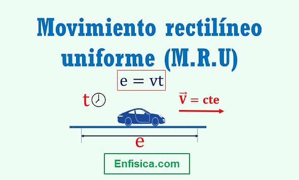

Definicion.
El movimiento rectilinio uniforme (m.r.u) describe el desplazamiento de un objeto en una sola direccion con una velocidad
y tiempo constante en una determinada distancia.
Recuerda que la velocidad es un vector, entonces, al ser constante, no varia ni su magnitud, ni su direccion de movimiento.

-La velocidad es constante en el tiempo, asi como la velocidad instantanea
y media; en cada unidad de tiempo que transcurre.
-La aceleracion es cero, entre el punto donde se inicia el movimiento y el
punto donde finaliza, la velocidad no aumenta ni disminuye.
-La longitud recorrida por un movil es proporcional al tiempo
que pasa.
-La trayectoria recorrida siempre es en forma de linea recta.
Posicion d = v * t velocidad v = d / t tiempo y aceleracion t = v * d a = 0
1) Un tren sale de Paris a las 6 hs y llega a las 8 hs a Lyon. Su recorrido es en linea recta. La distancia entre la estacion de Paris y
la estacion de Lyon es de 400 km. El tren siempre va a la misma velocidad, sin acelerar ni frenar hasta llegar a destino.
¿A que velocidad va el tren?
Distancia: 400 km
Tiempo: 8 hs - 6 hs = 2 hs
400 km / 2 hs = 200 km/h
Respuesta: el tren va a 200 kilometros por hora.
https://www.significados.com/movimiento-rectilineo-uniforme/
https://www.universoformulas.com/fisica/cinematica/movimiento-rectilineo-uniforme/"
https://www.ejemplos.co/movimiento-rectilineo-uniforme/